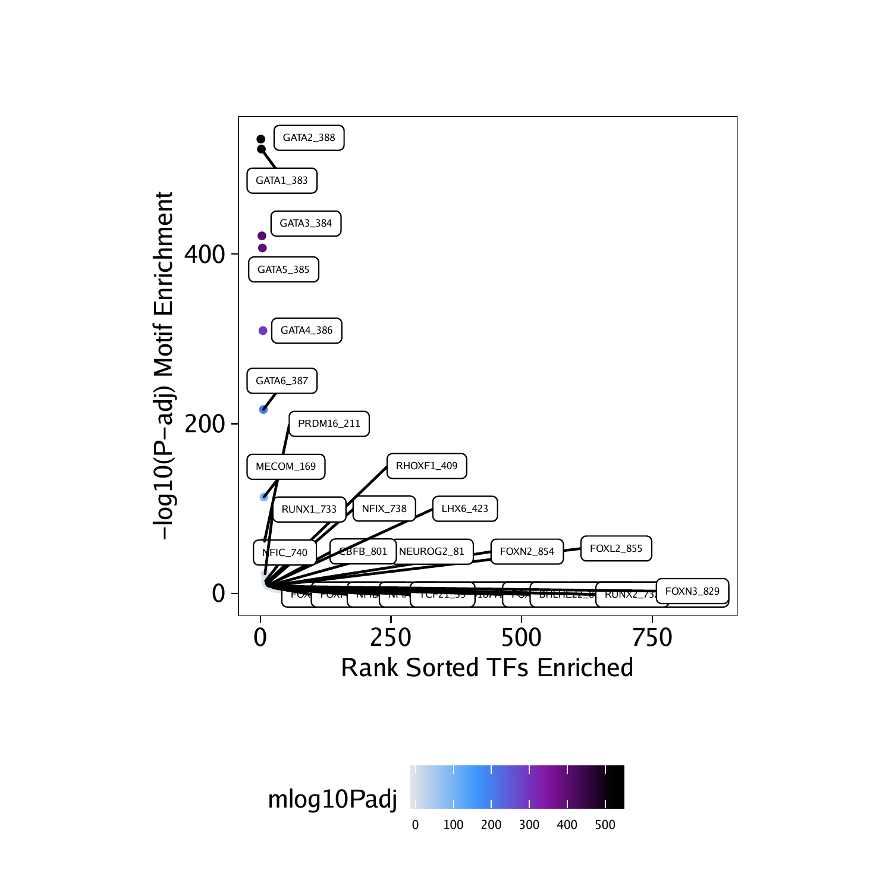
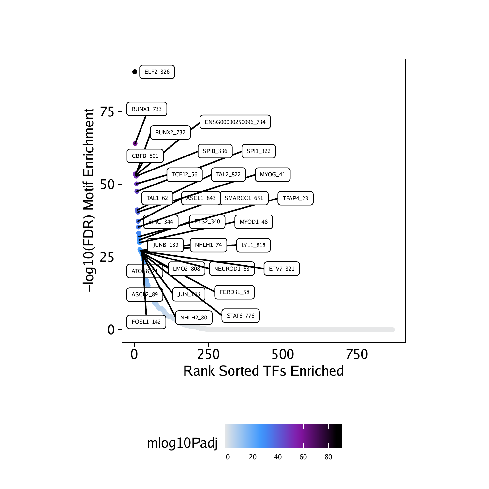

12.1 Motif Enrichment in Differential Peaks
Continuing our analysis of differential peaks from the previous chapter, we can look for motifs that are enriched in peaks that are up or down in various cell types. To do this, we must first add these motif annotations to our ArchRProject. This effectively creates a binary matrix where the presence of a motif in each peak is indicated numerically. We do this using the addMotifAnnotations() function which determines motif presence in the peak set stored in the ArchRProject.
## No methods found in package ‘IRanges’ for request: ‘score’ when loading ‘TFBSTools’
## 2020-04-15 10:38:11 : Gettting Motif Set, Species : Homo sapiens, 0 mins elapsed.
## Using version 2 motifs!
## 2020-04-15 10:38:13 : Finding Motif Positions with motifmatchr!, 0.027 mins elapsed.
## 2020-04-15 10:41:40 : Creating Motif Overlap Matrix, 3.48 mins elapsed.
## 2020-04-15 10:41:43 : Finished Getting Motif Info!, 3.523 mins elapsed.
We can then use the differential testing SummarizedExperiment object markerTest which was generated in the previous chapter to define the set of significantly differential peaks that we are interested in testing for motif enrichment. In this case, we are looking for peaks that have an FDR <= 0.1 and a Log2FC >= 0.5. In the context of the differential comparison made in markerTest, these represnt peaks that are more accessible in “Erythroid” cells than “Progenitor” cells. We can test these differentially accessible peaks for enrichment of various motifs using the peakAnnoEnrichment() function. This function is a generalizable function that can be used for many different enrichment tests as we will demonstrate throughout this chapter.
motifsUp <- peakAnnoEnrichment(
seMarker = markerTest,
ArchRProj = projHeme5,
peakAnnotation = "Motif",
cutOff = "FDR <= 0.1 & Log2FC >= 0.5"
)## 2020-04-15 10:41:49 : Computing Enrichments 1 of 1, 0.066 mins elapsed.
The output of peakAnnoEnrichment() is a SummarizedExperiment object containing multiple assays that store the results of enrichment testing with the hypergeometric test.
## class: SummarizedExperiment
## dim: 870 1
## metadata(0):
## assays(10): mlog10Padj mlog10p … CompareFrequency feature
## rownames(870): TFAP2B_1 TFAP2D_2 … TBX18_869 TBX22_870
## rowData names(0):
## colnames(1): Erythroid
## colData names(0):
To prepare this data for plotting with ggplot we can create a simplified data.frame object containing the motif names, the corrected p-values, and the significance rank.
df <- data.frame(TF = rownames(motifsUp), mlog10Padj = assay(motifsUp)[,1])
df <- df[order(df$mlog10Padj, decreasing = TRUE),]
df$rank <- seq_len(nrow(df))As expected, the most enriched motifs in the peaks that are more accessible in “Erythroid” cells correspond to GATA transcription factors, consistent with the well-studied role of GATA1 in erythroid differentiation.
## TF mlog10Padj rank
## 388 GATA2_388 535.7098 1
## 383 GATA1_383 523.8809 2
## 384 GATA3_384 421.6064 3
## 385 GATA5_385 407.2538 4
## 386 GATA4_386 309.7756 5
## 387 GATA6_387 216.7223 6
Using ggplot we can plot the rank-sorted TF motifs and color them by the significance of their enrichment. Here we use ggrepel to label each TF motif.
ggUp <- ggplot(df, aes(rank, mlog10Padj, color = mlog10Padj)) +
geom_point(size = 1) +
ggrepel::geom_label_repel(
data = df[rev(seq_len(30)), ], aes(x = rank, y = mlog10Padj, label = TF),
size = 1.5,
nudge_x = 2,
color = "black"
) + theme_ArchR() +
ylab("-log10(P-adj) Motif Enrichment") +
xlab("Rank Sorted TFs Enriched") +
scale_color_gradientn(colors = paletteContinuous(set = "comet"))
ggUp
We can perform the same analyses for the peaks that are more accessible in the “Progenitor” cells by using peaks with Log2FC <= -0.5.
motifsDo <- peakAnnoEnrichment(
seMarker = markerTest,
ArchRProj = projHeme5,
peakAnnotation = "Motif",
cutOff = "FDR <= 0.1 & Log2FC <= -0.5"
)## 2020-04-15 10:42:01 : Computing Enrichments 1 of 1, 0.053 mins elapsed.
## class: SummarizedExperiment
## dim: 870 1
## metadata(0):
## assays(10): mlog10Padj mlog10p … CompareFrequency feature
## rownames(870): TFAP2B_1 TFAP2D_2 … TBX18_869 TBX22_870
## rowData names(0):
## colnames(1): Erythroid
## colData names(0):
df <- data.frame(TF = rownames(motifsDo), mlog10Padj = assay(motifsDo)[,1])
df <- df[order(df$mlog10Padj, decreasing = TRUE),]
df$rank <- seq_len(nrow(df))In this case, the most enriched motifs in the peaks that are more accessible in “Progenitor” cells correspond to RUNX, ELF, and CBFB motifs.
## TF mlog10Padj rank
## 326 ELF2_326 88.68056 1
## 733 RUNX1_733 64.00586 2
## 801 CBFB_801 53.55426 3
## 732 RUNX2_732 53.14766 4
## 734 ENSG00000250096_734 53.14766 5
## 336 SPIB_336 52.79666 6
ggDo <- ggplot(df, aes(rank, mlog10Padj, color = mlog10Padj)) +
geom_point(size = 1) +
ggrepel::geom_label_repel(
data = df[rev(seq_len(30)), ], aes(x = rank, y = mlog10Padj, label = TF),
size = 1.5,
nudge_x = 2,
color = "black"
) + theme_ArchR() +
ylab("-log10(FDR) Motif Enrichment") +
xlab("Rank Sorted TFs Enriched") +
scale_color_gradientn(colors = paletteContinuous(set = "comet"))
ggDo
To save an editable vectorized version of these plots, we use the plotPDF() function.
plotPDF(ggUp, ggDo, name = "Erythroid-vs-Progenitor-Markers-Motifs-Enriched", width = 5, height = 5, ArchRProj = projHeme5, addDOC = FALSE)## [1] “plotting ggplot!”
## [1] “plotting ggplot!”
## [1] 0